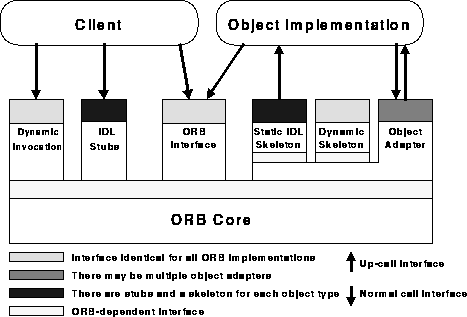

Distributed Programming: Distributed Objects |
The Common Object Request Broker Architecture (CORBA) is a standard ORB architecture defined by the Object Management Group (An international consortium to develop ORB technology).

OMG IDL stub
Stubs generated from an IDL specification depending on the interface
of the target object. They make calls on the rest of the ORB .
Dynamic Invocation interface
Interface independent of the target object's interface. It allows the
dynamic construction of object invocations.
ORB Interface
The interface that goes directly to the ORB which is the same for all
ORBs and does not depend on the object's interface or object adapter.